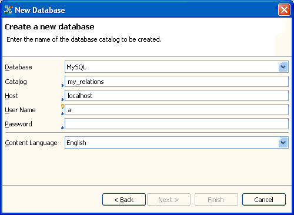

Added export/backup of content to XML file
You can use the Export to XML file wizard to export the application's content to a file in a future proof XML format. You can use this export as backup for the actual database used by the application or to transfer the content to another Relations database. You might even apply an XSL transformation and use the exported data in a completely different application.

Added import/restore of content from XML file
You can import the XML export into a new database catalog. You can import both in an embedded or an external database. To start the XML import, call the Import... wizard from the Data menu and select Import from XML File.

Creating new catalogs in all databases
Relations 1.1 makes it possible to create the set of tables needed to hold the data not only for the embedded database, but for all databases (provided that a plug-in to connect to the respective RDMS exists).
In particular, you can easily create the Relations table set in a MySQL database now. The only thing you have to do is to create a "MySQL database" (a database catalog, to be correct) and to specify a user having the rights to create and modify table items on this catalog.
